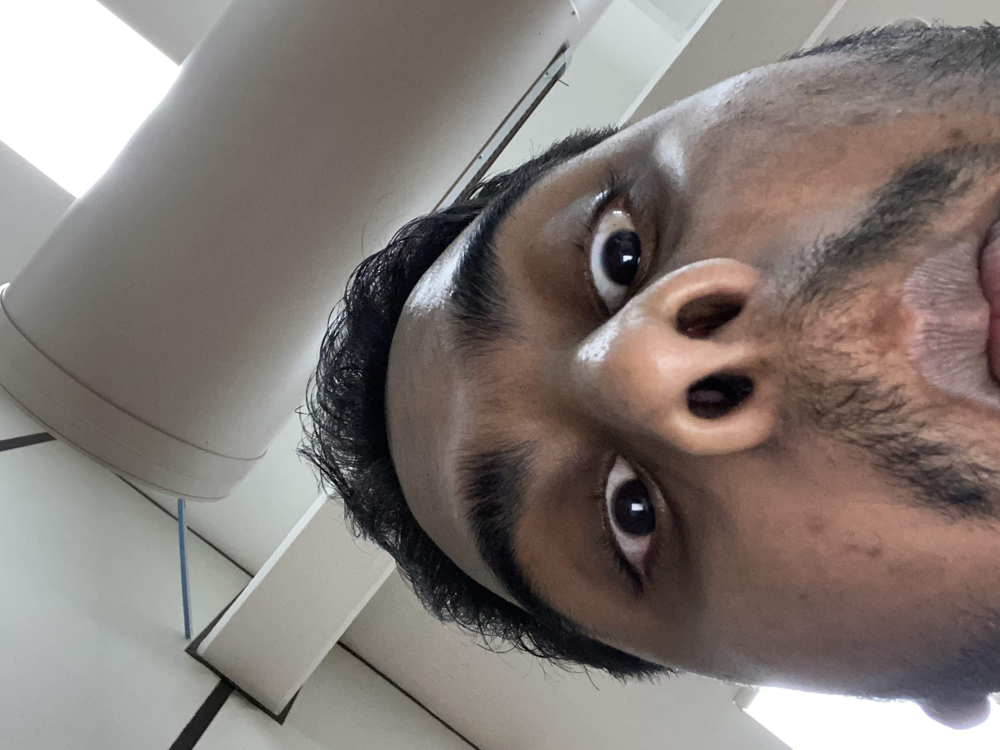
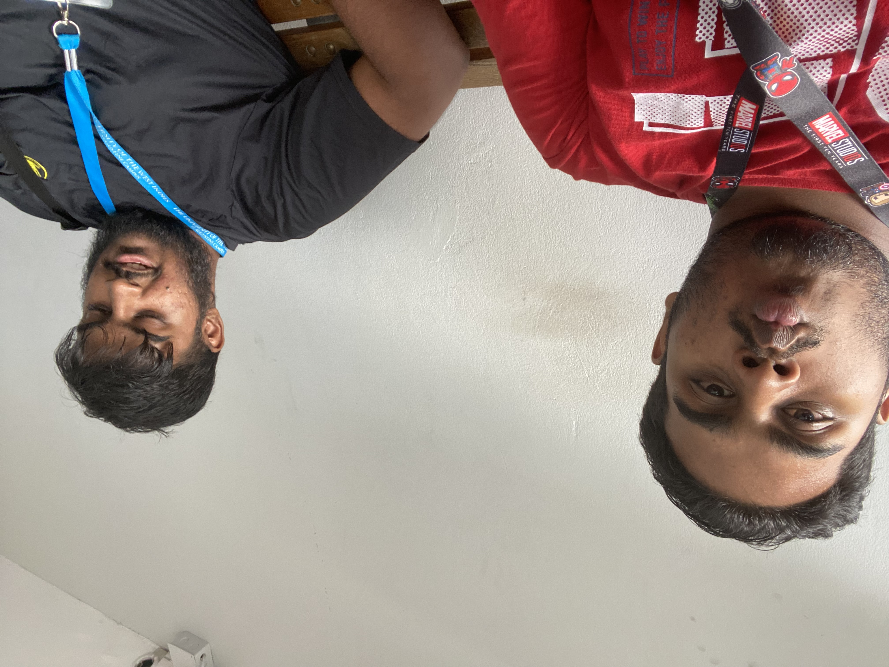
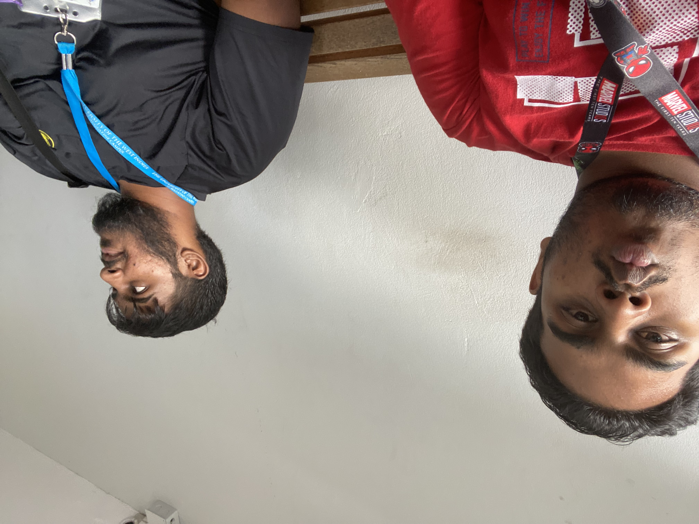
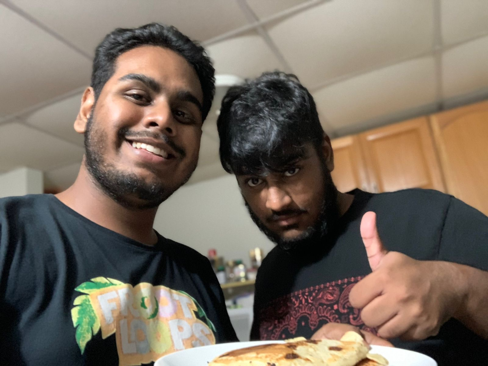

Description for Image 1: Suspect seems to be innocent. Meanwhile, he is thinking about his next victim. 'Who should I be fake to next?' echoing in his mind.

Description for Image 2: Suspect is looking for his dignity. PS: He still has not found it.

Description for Image 3: Both suspects were spotted together. The suspect in the black t-shirt was looking down, symbolizing the way he looks down on other people. The suspect in the red t-shirt was making a 'duck face.' Yes, he is over 2 decades old.

Description for Image 4: Suspect in the black t-shirt just saw Medusa, whilst the suspect in the red t-shirt is still over 2 decades old.

Description for Image 5: Suspects made pancakes together. They tricked people into thinking the pancakes actually tasted good. The chocolate chips from the pancakes represent their fakeness to the world.